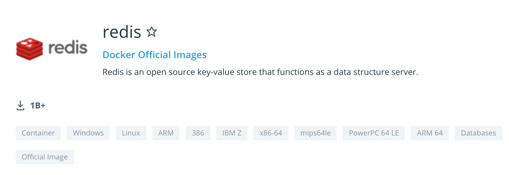

东软 & 华为鲲鹏生态
适配经验分享
东软政府事业本部医疗保障事业部
软件架构师
何鑫
@AlphaHinex
华为鲲鹏生态
鲲鹏原指华为海思在 2019 年 1 月发布的一款兼容 ARM 指令集的服务器芯片
鲲鹏920
后来，鲲鹏不再仅仅局限于此，
还包含了兼容的服务器软件，以及建立在新计算架构上的完整软硬件生态和云计算生态

东软与华为鲲鹏生态适配进展介绍
容器化应用适配
华为云微服务体系适配
容器化应用适配的关键问题
调整镜像为 ARM 架构可用镜像
### 如何选择鲲鹏下可用的镜像 * 在华为鲲鹏服务器下，使用 Docker 时，因鲲鹏服务器使用的芯片为 ARM 架构，镜像也需要使用 ARM 版本的 * 从 x86 架构拉取的镜像直接导出导入到鲲鹏服务器上是不可以直接使用的
### 如何查看镜像的架构类型 * 可以通过 `docker inspect IMAGE_NAME` 查看镜像的架构类型 ```bash $ docker inspect redis:5.0.5-alpine|grep Architecture "Architecture": "amd64", ```
在鲲鹏服务器上重新拉取镜像，会自动下载 ARM 架构的镜像，前提是需要有提供 ARM 架构的版本，如：

### 不好用或者没有 ARM 架构镜像 ### 怎么办？
### 以 Redis 为例 * 在鲲鹏服务器上，使用官方提供的 ARM64 版本的 Redis 镜像，启动时会报如下异常： ```bash <jemalloc>: Unsupported system page size ``` * 从 Docker Hub 上试了一些有提供 ARM 版本的 Redis 镜像，基本都是相同的问题 * 推测是由于这些镜像的编译环境的 page size 与鲲鹏运行环境的 page size 不一致导致的
### 解决办法 * 在鲲鹏环境下，使用源码重新构建一个镜像 * 详细过程可见 [华为鲲鹏下可用的 Redis docker 镜像](https://alphahinex.github.io/2020/09/06/huawei-kunpeng-redis-docker-image/) * [可用镜像传送门](https://gitee.com/AlphaHinex/trunk/blob/master/docker-library/redis/5.0/redis-kunpeng-5.0.9.tar.gz)
华为云微服务体系适配
 
### 遇到的问题 * 2020 年上半年进行与 CSE 的适配时，发现当时 CSE 的版本与适配应用所使用的 Spring Cloud 版本不兼容，导致应用发布存在异常
### 解决方案 * 为验证与华为云应用中间件的适配情况，仅更换应用的发布方式 * 以 CCE 容器化方式进行应用系统的发布 
### Dubbo 使用 Mesher 接入 CSE 
### 对于 Mesher 的理解 * [Mesher简介](https://support.huaweicloud.com/devg-servicestage/ss-devg-0013.html) * Mesher 是 Service Mesh 的一个具体的实现，是一个轻量的代理服务以 Sidecar 的方式与微服务一起运行 * 原生的 Dubbo 应用，无法直接与 CSE 的注册中心及配置中心进行交互，需要借助 Mesher，实现对应用的非侵入式、服务网格接入 CSE
## 项目案例